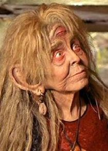
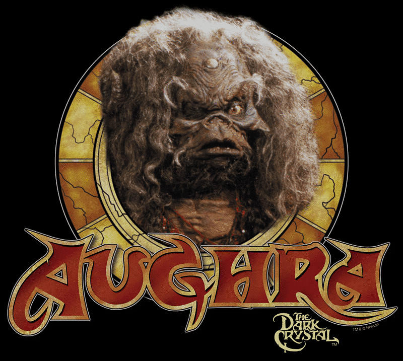

Little old ladies of Sci Fi
Certain social groups are under represented in sci fi. Little old ladies are a prime example. Old ladies play a huge part in everyone's lives and we love 'em, but in our sci fi,
they are scarcely seen. Remember that little old lady in star Wars? and Star Trek? Exactly! George Lucas famously said that Lando was written into TESB when he realised that the only black man was Darth Vader!
Also he had had a queer couple in R2D2 and C3PO, but never once allowed an elderly female character to feature. So here's my list of my favourite little old ladies of sci fi:
Noranti (farscape). Mysterious space witch with three eyes from cult show Farscape (claimed to be) constructed out of storylines rejected for Star Trek. Also a nice amount of Henson muppetry in this show.

Peli Moto (The Mandalorian/Boba Fett), the wacky mechanic (whose name sounds suspiciously like a garage in Tunisia) runs a spaceship repair joint
frequented by the Mandalorian. The Mandalorian is worth watching for Amy Sedaris' performance alone.

Aughra (The Dark Crystal. OK it's over in the realm of fantasy, where crone archetypes abound, but Augra, the scary old hag with horns and a single, detechable eye and cantankerous
personality was compelling viewing.

Back to main page